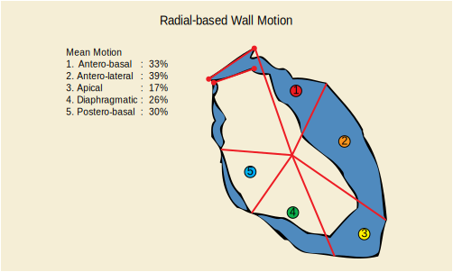

DICOM PS3.17 2024a - Explanatory Information
T.3.4 Radial Based Wall Motion Region
(Current)
Prev
T.3 Wall Motion Regions
Next
PS3.17
>
Quantitative Analysis References (Informative)
>
Wall Motion Regions
>
Radial Based Wall Motion Region
T.3.4 Radial Based Wall Motion Region

Figure T.3-3. Radial Based Wall Motion Region
DICOM PS3.17 2024a - Explanatory Information